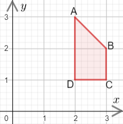
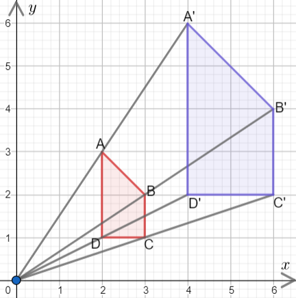
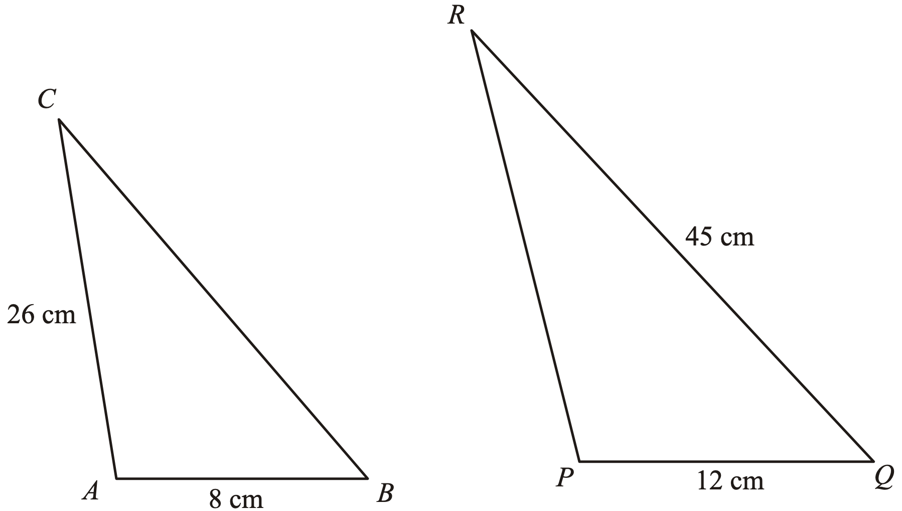

Englarge this shape using a scale factor of \(2\) and a centre of enlargement at \((0,0)\)
Compare the side lengths of the enlarged shape with the original shape

Two shapes are mathematically similar if one is an enlargement of the other.
Their corresponding side lengths are in the same ratio (the scale factor)
- Find the corresponding sides with known lengths
- Their ratio is the scale factor
- Use the scale factor to find the missing sides
- Check to make sure the answer makes sense